À la recherche du passé français de la comtesse Mouravieva-Amourskaya
par Olga KUKHARENKO
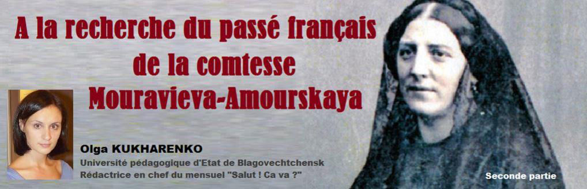
La région de l’Amour par les yeux d’un voyageur français
J’ai surtout été curieuse de lire ses descriptions de la nature de la région de l’Amour, du fleuve et de la ville de Blagovechtchensk, ma ville. « … enfin les bords se peuplaient de plus en plus, l’artillerie se fit entendre le 31 (mai) au matin, et nous vîmes à travers la fumée la longue ligne des maisons de Blagovechensk, la station la plus importante de toutes après Nikolaïefsk.
Ici déjà nous commençâmes à sentir l’Amérique et à voir l’Europe en quelque sorte à l’est, car nous trouvâmes quelques Yankees venus de Californie et de Boston…
Le général Mouravieff ayant mis pied à terre au milieu des salves d’artillerie, il fut reçu par les officiers en grande tenue, et après avoir passé la revue des Cosaques, il alla droit à la maison du gouverneur de cette province, dite « de l’Amour ».
Le voyageur est charmé par notre ville : « Qui se douterait en Europe qu’il existe à une pareille distance de notre civilisation, de jolies maisons meublées avec luxe, entourées, même dans ce climat polaire, des plus élégants jardins, et contenant non seulement de quoi nourrir l’esprit, mais des pianos, de la musique et des romans ?
Blagovechensk possède en outre deux églises, une population de deux mille âmes, des mines de charbon, et on a même trouvé, dit-on, du fer dans son voisinage.
Ici les bords du fleuve sont d’une étonnante richesse ; malgré la rigueur de l’hiver, on éprouve des froids de – 45, la plupart de nos végétaux, tels que les choux, l’oignon, le maïs, les fèves, réussissent parfaitement. Les arbres cependant n’atteignent pas la même grosseur que dans la partie supérieure du fleuve ; on y voit aussi des chênes rabougris et des noisetiers… Des prairies immenses, où l’œil se perd, s’étendent aux environs de Blagovechensk ; l’herbe y est si haute, qu’un homme y serait enseveli avant d’y avoir fait vingt pas ».
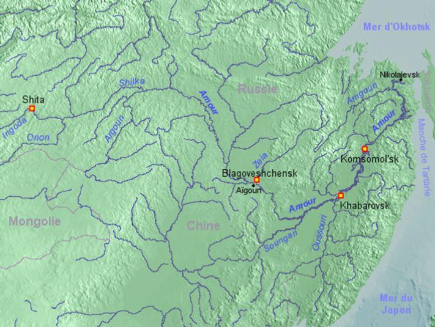
Carte de l'Amour et de son bassin
Ses descriptions de l’Amour sont très poétiques. Et, chose étonnante, lui, qui a tellement voyagé et tellement vu le monde, considère sincèrement notre fleuve « comme le plus pittoresque de tous les fleuves. On y trouve point cette monotonie qui accable sur les grands cours d’eau de l’Amérique, où l’on a tout vu si l’on y a fait cent lieus ; on n’y voit point cette boue immonde où jamais le ciel ne s’est miré, ni ces monstres qui les rendent repoussants ; on y voit des eaux toujours claires, des rives de tous les aspects, boisées, déchirées, vastes comme l’Océan ou redressées comme les plus âpres falaises ; on y passe en revue presque toutes les végétations du globe ; les peupliers, les saules, les mélèzes, les pins et les cerisiers s’y confondent en face des neiges éternelles, et y forment des perspectives infinies qu’interrompent tout à coup les plus hardis promontoires ; enfin l’air, partout charge des plus ardentes odeurs, vous y fait oublier que vous êtes dans la patrie du renne… »
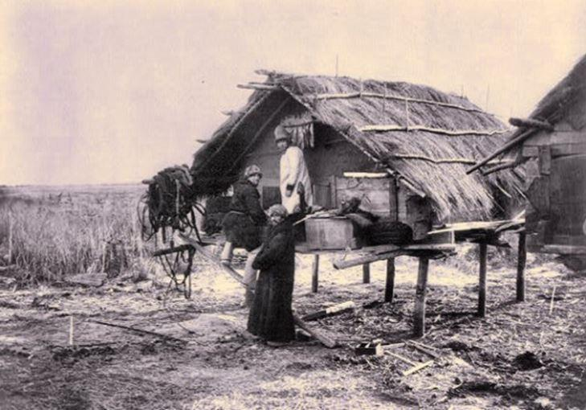
Goldes devant leur maison, au Nord de Khabarovsk
SL’auteur est très impressionné par le confluent de l’Amour et de la rivière Zeïa, ou justement est située la ville de Blagovechtchensk. « Il est rare, même en Amérique, de voir un si majestueux confluent de deux puissants cours d’eau. L’Ohio, il est vrai, tombe bien majestueusement dans le Mississipi ; mais il s’avance d’une manière paisible et grave, tandis que la Zea, malgré sa paraisse habituelle, arrive toute furieuse, comme si elle allait s’engouffrer dans un Niagara ».
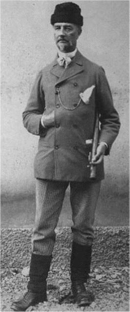Chaque page des chapitres sur le voyage d’Henry Russell de Killough à travers la Russie du XIXe siècle me fascinait par des narrations passionnantes. Les impressions du Français sur l'hospitalité russe et son regard enchanté sur notre région, malgré le climat rigoureux, m’ont agréablement touchée.
Entre-temps, grâce à Paul Mirat j’ai fait connaissance avec l’arrière-petite-nièce de Russell-Killough, Mme Monique du Fresnel, enseignante et directrice de la bibliothèque des Sciences Po de Bordeaux. Mme du Fresnel est l’auteur de la biographie de son célèbre parent. Elle garde respectueusement sa mémoire. Son livre sur le voyage autour du monde a inspiré son arrière-petite-nièce à faire un voyage pareil dans les années 1980.
Elle a voyagé à travers les terres russes en Transsibérien et garde les impressions les plus vives de cette expérience, qui est devenue spéciale parce que, dans ces années, l'URSS était encore un pays fermé.
Monique du Fresnel dit que dans sa famille on avait toujours parlé des liens amicaux chaleureux qui la réunissaient la famille Mouraviev-Amoursky depuis que son arrière-grand-oncle s’était lié d’amitié avec Nikolaï et Ekaterina Mouraviev-Amoursky. On dit qu’une des nièces de Nikolaï, la comtesse Mouravieva-Amourskaya, était présente dans la maison les derniers jours de la vie d’Henry Russell de Killough. Mme du Fresnel dit qu’à cette époque-là, on n’appelait par le prénom, on disait juste « Comtesse Mouravieva-Amourskaya », donc elle ne connaît pas le nom de la comtesse, peut-être que c'était Nadejda, la fille de Valerian, le frère de Nikolaï.
Chercher et trouver ensemble !
Ainsi, la publication sur Élisabeth Bourgeois de Richemont parue dans « Salut ! Ça va ? » en mai 2016, nous a permis de raconter aux habitants de la ville de Gelos des faits importants de sa vie, de convaincre ses compatriotes d’aujourd'hui du rôle exceptionnel de cette femme héroïque dans le destin de notre ville, de notre région, de tout l’Extrême-Orient et dans la formation et le développement de l’État russe. La correspondance avec la mairie est devenue une étape importante dans nos recherches et a déclenché certains événements.
Premièrement, il a fallu beaucoup de temps (et cela n’est pas surprenant car plus de cent ans se sont écoulés et les dossiers d’inhumation ont été entre les mains de plusieurs générations d’employés de la commune de Gelos) pour confirmer que la sépulture a été achetée par une autre famille, puisque restée longtemps abandonnée, et le reliquaire de la famille Richemont a été extrait et placé dans l’ossuaire. C’est peut-être suite à ces manipulations que la pierre tombale est posée à l’envers. Plus tard, Isabelle Ané, employée de la mairie, responsable de la gestion du cimetière de la ville, a pu attester que les nouveaux propriétaires de cette sépulture ne l’utilisaient pas et qu’il était vide. Cette découverte a été un autre miracle incroyable dans notre histoire !
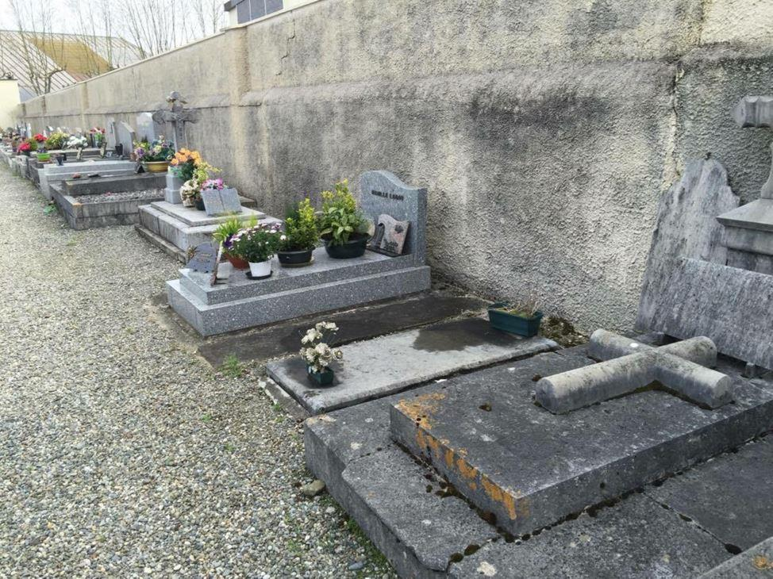Deuxièmement, Paul Mirat a trouvé au cimetière de Gelos une autre sépulture abandonnée, celle de deux sœurs princesses Troubetzkoy.
Pour chaque Russe ce nom de famille est bien connu car représente une des plus grandes, des plus nobles maisons princières de Russie. C’est pourquoi quand j’ai vu une photo d’une tombe avec une plaque
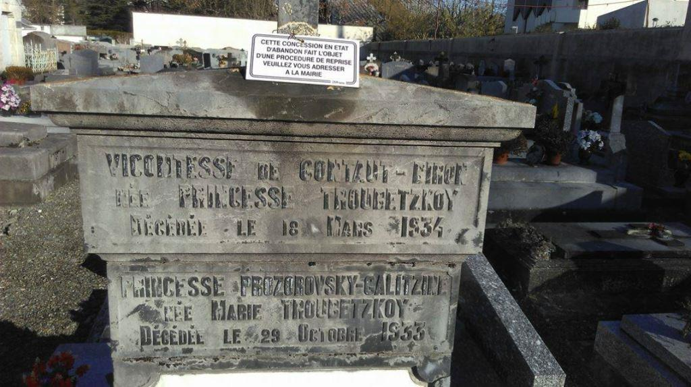« Cette concession en état d’abandon fait l’objet d’une procédure de reprise. Veuillez-vous adresser à la mairie » sur une grande croix orthodoxe déjà bien abimée soulevant au milieu du cimetière, j’ai aussitôt signalé à Paul Mirat que sa destruction était absolument impossible.
Cette sépulture représente sûrement un monument de notre patrimoine historique commun qu’il faudrait surement sauvegarder !
Ainsi, Isabelle Ané et Loïc Crovella, adjoint au maire de Gelos en charge de la culture et du patrimoine de la commune, sont vite tombés d’accord sur le fait que ces tombes ne devaient pas être revendues ni reprises par d’autres familles car elles étaient les témoins du passé historique patrimonial de Gelos. Par la suite, nous sommes convenus avec la mairie sur la nécessité de restaurer la sépulture d’Élisabeth Bourgeois de Richemont. Il ne restait que réfléchir ou chercher un financement.
Enfin, des articles racontant l’histoire touchant de l’amour d’un gouverneur général sibérien et une béarnaise Élisabeth, épouse Ekaterina, ont été publiés dans les médias régionaux russes et français : « Sud-Ouest » et « Pyrénées Atlantiques », « Amourskaya pravda ». Plus tard, les archives des Pyrénées Atlantiques se sont adressées à nous afin d’obtenir la permission d’utiliser les publications de « Salut ! Ça va ? » pour compléter leurs données d’archives. Cette confiance fut pour nous, bien sûr, d’un honneur particulier.
Les Mouraviev-Amoursky bientôt dans un film
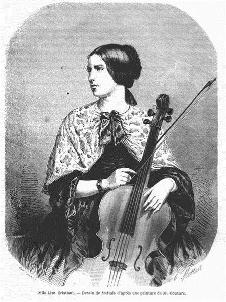Toutes ces publications accessibles à un large public sur internet attiraient l’attention de différentes personnes faisant des recherches liées aux époux Mouraviev-Amoursky. C’est ainsi que nous avons fait connaissance avec Marie-Jaoul de Poncheville, scénariste et réalisatrice de cinéma et de télévision qui vit avec l’histoire tragique de la talentueuse violoncelliste Lise Cristiani depuis plus de 20 ans. Elle prépare actuellement un film sur le fulgurant destin de la jeune violoncelliste française qui « au milieu du XIXe siècle, prodige de vingt ans, célébrissime dans l’Europe entière, traverse en musicienne et en aventurière l’immense empire russe avec une expédition militaire, à la découverte du Kamtchatka, et trouve la mort à Novotcherkassk sur le Don, au retour de cette odyssée sans pareille ».
Et c’est justement avec les époux Mouraviev-Amoursky que Lise a effectué son long voyage difficile jusqu’au Kamtchatka. Marie-Jaoul cherche des informations sur Lise et elle s’est intéressée à nos traductions des documents des historiens russes. D’après les chroniques de la mémorialiste Maria Frantseva, proche des décembristes, Lise a décidé d’aller en Sibérie, voulant probablement vivre de nouvelles expériences : « Elle nous a charmés à Tobolsk non seulement par son magnifique jeu de violoncelle, mais aussi par sa courtoisie et son esprit coquin. En apprenant que l’épouse du gouverneur général du comte Mouraviev-Amoursky était française, Lise s’est rendue à Omsk et s’est très bien entendue avec la comtesse Mouravieva, qui accompagnait toujours son mari dans les expéditions à travers la vaste Sibérie Orientale. La comtesse a invité Lise à les accompagner dans l’expédition au Kamchatka. Le voyage a été très difficile, ils sont parvenus Okhotsk et Kamchatka à cheval. Arrivés au port Petropavlovsk, ils y ont rencontré un navire marchand français. La comtesse Mouravieva a conseillé à Lise de donner un concert. La joie et la surprise des marins français étaient indescriptibles. De retour à Tobolsk, Lise, joyeuse et folâtre, nous a parlé avec passion de son voyage. Mais sur la route de retour de Sibérie en France, en passant par le Caucase, elle est décédée du choléra la veille de son concert ».
Les époux Mouraviev-Amoursky vont figurer parmi les personnages principaux du futur film Marie-Jaoul de Poncheville. La réalisatrice nous a demandé de participer à la préparation et de traduire le synopsis en russe, car elle est toujours à la recherche des partenaires pour le tournage et espère intéresser les producteurs ou cinéastes Russes.
Villa Richemont
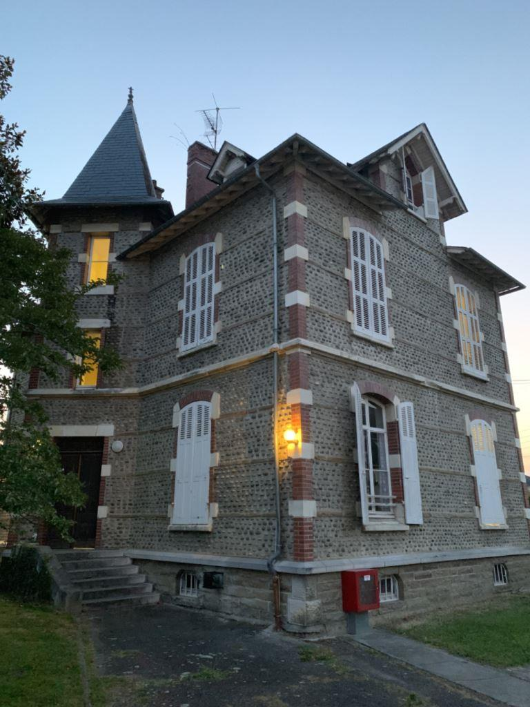Grâce à la participation de Paul Mirat, nous avons également pu trouver la maison de la famille Richemont située dans la ville de Gelos au 18, rue Louis Barthou. La numérotation des maisons et le nom de la rue ont changé depuis lors, avant c’était « La route de Pau ». Cependant, des archives, des dessins, des extraits du cadastre ont permis de localiser la Villa Richemont. Aujourd’hui la maison appartient à une association « Action Jeunesse Innovation et Réinsertion » spécialisée dans le secteur d’activité de l’hébergement social pour enfants en difficulté. Cette année, en juillet lors de la visite à Gelos j’ai eu la chance de visiter la villa et entretenir avec des employés de l’association.
Les jeunes viennent ici à la recherche d’un abri temporaire et d’un soutien pour diverses raisons : conflits familiaux, incompréhension, problèmes de nature mentale des parents.
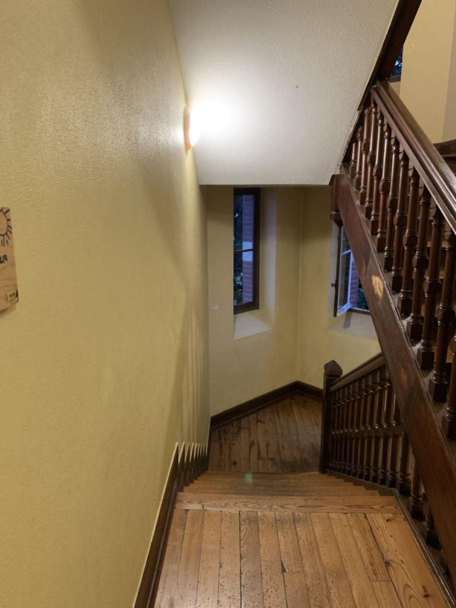Des réfugiés sans domicile ni famille en France, ainsi que les petits délinquants en correction, y trouvent de l’aide et du soutien. Sur le territoire appartenant à l’organisation, en plus de la Villa Richemont il y a plusieurs bâtiments modernes, un grand jardin et même un potager. À l’extérieur, la Villa Richemont a conservé l’aspect architectural du XIXe siècle, comme la plupart des maisons de Gelos et ses environs. À l’intérieur, seul un grand escalier en bois reste d’époque. Toutes les chambres sont rénovées et équipées des meubles modernes. Neuf pièces de la villa sont occupées en permanence par les locataires, la dixième reste vide au cas où quelqu’un aurait un besoin urgent d’un abri.
En général tout est organisé ici pour une socialisation harmonieuse des jeunes : ils plantent des légumes, jardinent. Certains enfants doivent même apprendre des règles élémentaires de politesse, d’étiquette, d’hygiène et d’auto-organisation dans la vie quotidienne et dans la société.
« Notre histoire ne fait que commencer »
La cérémonie d’inauguration de la sépulture restaurée de la famille Richemont a eu lieu le 6 juillet. Nous avons réussi à attirer l’attention des mairies des deux villes, Gelos et Blagovechtchensk sur nos recherches. Ensemble nos deux villes ont réussi à aboutir ce beau projet pour la sauvegarde de notre patrimoine commun. Les travaux de restauration ont commencé par le retour des restes de la famille dans la tombe.
C’était un moment très important et émouvant : enfin Élisabeth-Ekaterina et sa famille reposent en paix… On a décidé de ne pas remplacer la pierre tombale, mais de laisser celle qui avait été posée en 19e siècle pour qu’elle reste comme témoin de l’histoire de la famille Richemont. On l’a nettoyée de la poussière, de la saleté et on l’a poncée. Malheureusement, personne n’a pu déchiffrer complètement toutes les inscriptions gravées sur la pierre initialement, c’est pourquoi il on s’est mis d’accord de ne pas les restaurer. On a donc renforcé le pourtour de la pierre tombale et écuré tout autour d’elle. Une plaque commémorative en marbre noir a été fixée sur le mur au-dessus de la sépulture. On y lit en russe et en français : « Ici repose Élisabeth Bourgeois de Richemont, décédée à Gelos en 1897, veuve du Gouverneur de Sibérie orientale Nicolaï Mouraviev, comte Amoursky, fondateur de la ville de Blagovechtchensk. Les habitants de Blagovechtchensk reconnaissants. »
L’inauguration de la sépulture restaurée a été solennelle et émouvante. Elle a réuni à la mairie de Gelos le maire Pascal Mora, l’adjoint au maire Martine Laugé Barat-Touig, Isabelle Ané, responsable de la gestion du cimetière municipal, d’autres représentants des autorités locales, des journalistes, le consul honoraire de Russie a Biarritz, Alexandre de la Cerda, l’évêque de l’Église orthodoxe française Benoit et ses paroissiens, Paul Mirat, Monique du Fresnel, Mireille Jammes-Newman et son époux Nicholas Newmann, de la famille du poète béarnais Francis Jammes et d’autres habitants du coin intéressées à notre histoire.
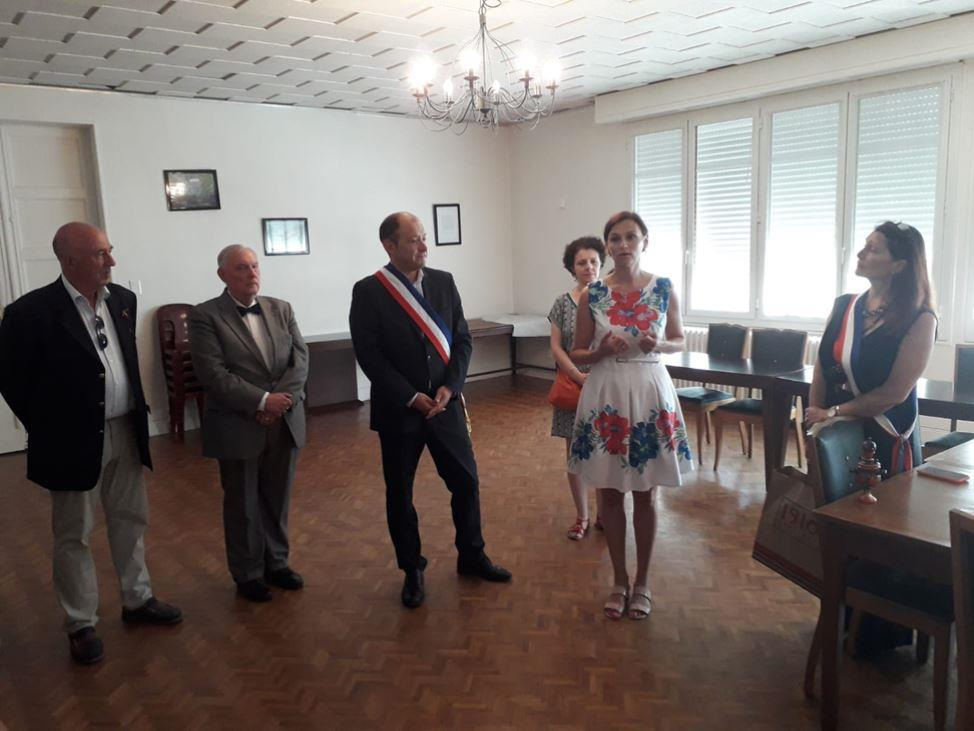J’ai attendu ce moment pendant plus de trois ans. Il était d’une importance particulière pour moi. La tombe de Élisabeth Bourgeois de Richemont, l’épouse de Nikolaï Mouraviev-Amoursky est retrouvé, restauré et désormais sauvé de l’abandon. La mémoire de cette femme courageuse est sortie de l’oubli. Elle, qui toute sa vie était dévouée à son époux, l’homme d’État que le devoir appelait dans des expéditions très éprouvantes et difficiles, et dans lesquelles Ekaterina l’accompagnait courageusement en surmontant le froid farouche, la faim épuisante et des fatigues extrêmes. Elle était à ses côtés aux moments les plus durs de son service, le soutenant jusqu’au dernier jour de sa vie.
J’ai transmis au maire Pascal Mora une lettre de reconnaissance de la part de Mme le maire de Blagovechtchensk, Valentina Kalita, où elle disait : « J’exprime ma sincère reconnaissance à monsieur Pascal Morat, le maire de Gelos, pour avoir aidé à restaurer le sanctuaire de Élisabeth Bourgeois de Richemont, la veuve du comte Nikolaï Mouraviev-Amoursky, ayant joué un rôle inappréciable dans l’établissement des frontières de l’État russe, et pour avoir sauvegardé le patrimoine historique et avoir noué des liens amicaux entre la ville de Blagovechtchensk (Russie) et la ville de Gelos (France).»
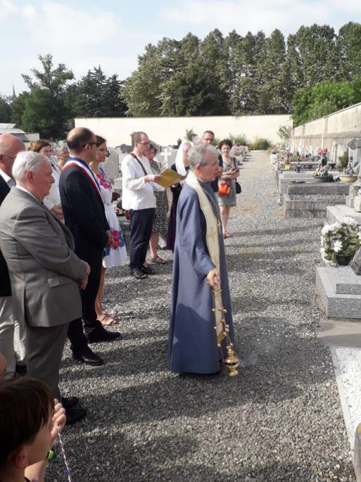Les présentations faites, les discours prononcés, l’histoire ayant réuni tout ce monde, racontée, nous nous sommes dirigés vers le cimetière pour rendre hommage à la mémoire de notre Elizabeth-Ekaterina. C’était tellement agréable et touchant de voir le drapeau russe recouvrir la plaque sur la tombe. À sa gauche il y avait une grande photo des époux Mouraviev-Amoursky.
Après avoir enlevé le drapeau de la plaque commémorative, nous avons déposé des fleurs sur la tombe de la part des habitants des deux villes. L’évêque Benoit a chanté une prière. À la fin de la cérémonie tous les participants ont honoré la mémoire de Nikolaï et Ekaterina Mouraviev-Amoursky par une minute de silence.
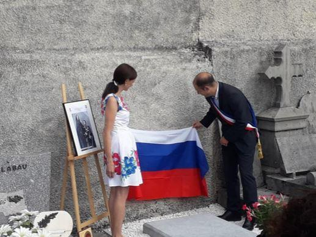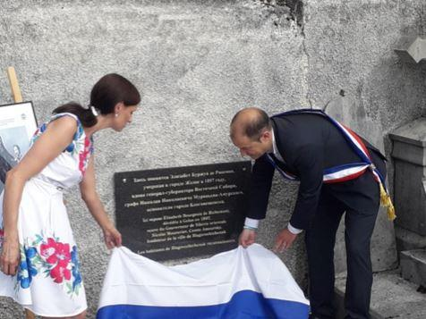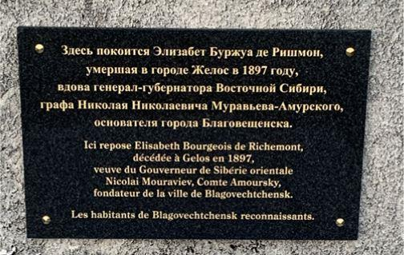Plus tard, le maire Pascal Mora a avoué qu’avant ce jour-là, le 6 juillet, il n’avait pas attaché pas beaucoup d’importance à l’histoire de la restauration de la sépulture de Richemont. Cependant, il a été tellement pris par les émotions éprouvées lors de la cérémonie qu'il a vraiment réalisé l'importance pour les Russes de Blagovechtchensk de la mémoire de cette femme exceptionnelle, l’épouse du gouverneur général de la Sibérie orientale Nikolaï Mouraviev-Amoursky. Pascal Mora a assuré avec insistance que maintenant le lieu de sépulture de leur célèbre compatriote deviendra un symbole de la ville et sera inclus dans les guides touristiques de la région comme un monument important de son histoire. Et, chose incroyable - le lendemain, quatre drapeaux s’élevaient au-dessus de la mairie de Gelos : européen, français, béarnais et russe, ceci bien sûr, pour quelques jours.
« Notre histoire ne fait que commencer », a déclaré le maire. Et nous, dans l’attente des visites des délégations officielles de nos villes et de la concrétisation de l’idée d’un jumelage, nous pensons poursuivre la recherche du passé français de la Comtesse Mouravieva-Amourskaya...
Partager cette page